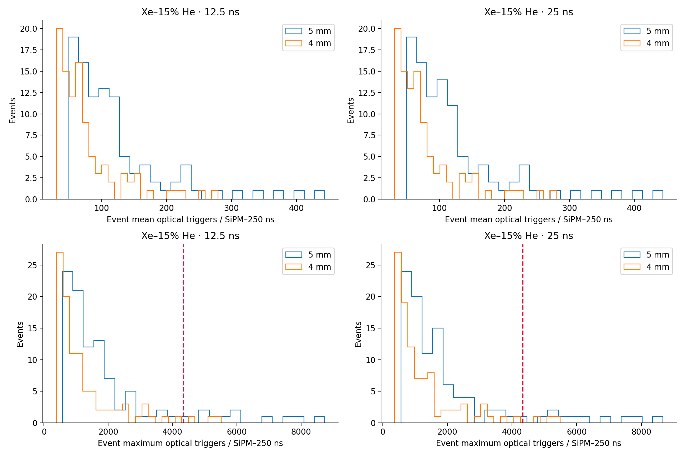
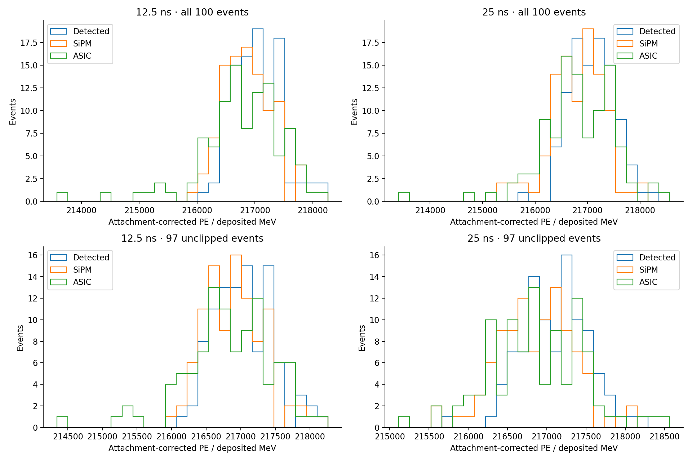
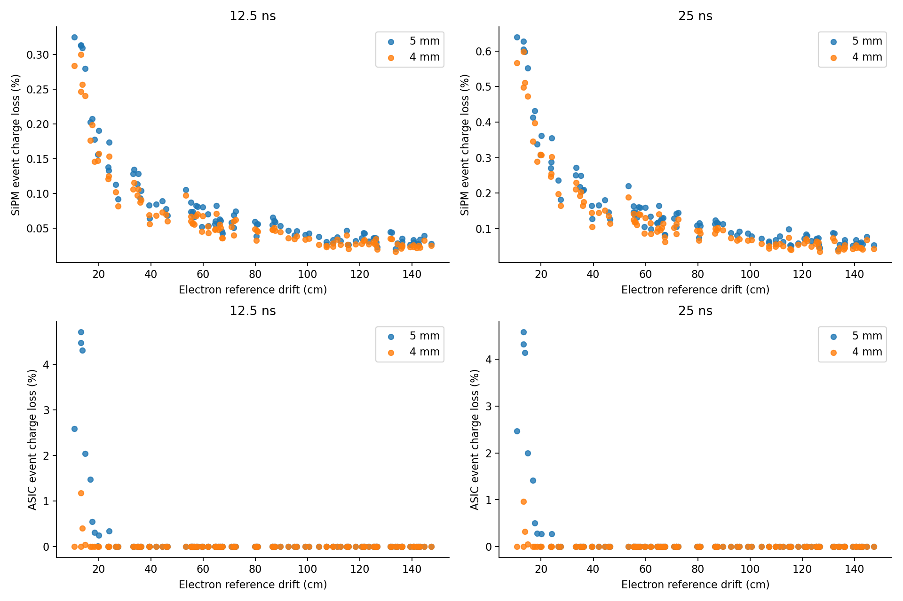
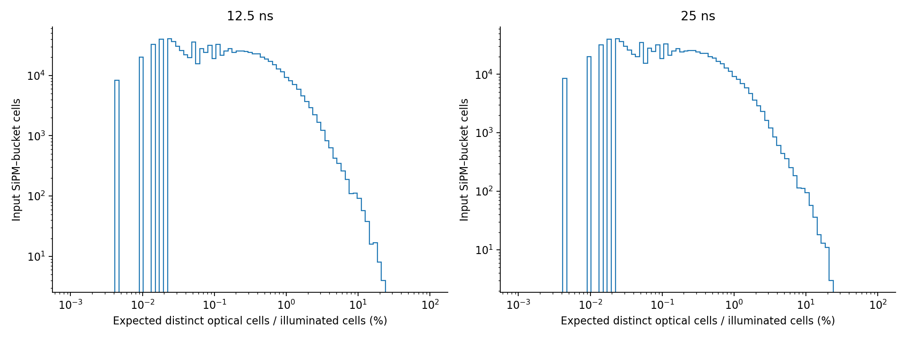

Xe–15% He only: the same 100 bb0nu source tracks and primary-pair realizations as the preceding pilot. Electron reference drift is sampled uniformly over 10–150 cm using the same deterministic placement stream; the saved reference and current events have identical IDs and drift distances. Ion distance is its complement within 150 cm. Original hit coordinates are retained, and each event uses its reference distance for diffusion and attachment. Only electron photon collection and response are replayed.
The square hole pitch is 4 mm; hole and guide diameter are 2.5 mm. EL depth is 5 mm at 15 bar and E/P = 2 kV/cm/bar, with unit electron collection. Guides have a 0.5 mm radial xenon gap. Uniform axial EL and absorbing walls give a recomputed exit acceptance. TPB conversion 0.65, forward factor 0.5 and guide trapping 1−1/1.5 apply once, giving emitted-VUV to saved-blue-photon probability 0.01187461. Propagation and NOA 87 coupling are ideal.
S14160-3015PS remains 3 × 3 mm² with 39,984 physical cells, PDE 0.32, gain 360,000, +4 V and 25 C. Uniform illumination of the 2.5 mm circular guide footprint uses 21,808 cells, rounded from 39984 × π × 1.25² / 9. The remaining 18,176 cells receive dark triggers. The full-device 700 kcps dark rate is split by cell count. The validated statistical recovery model runs at 128 substeps per 250 ns bucket, with 12.5 and 25 ns provisional recovery constants. These are sensitivity inputs rather than measured recharge constants. PDE is the packaged peak-value approximation; crosstalk, afterpulsing and gain spread remain deferred.
| Pitch / hole diameter | Recovery | SiPM loss (%) | ASIC loss (%) | Events clipped (%) | Retained / 100 |
|---|---|---|---|---|---|
| 5 mm / 3 mm hole | 12.5 ns | 0.0790 | 0.2184 | 11.0 | 89 |
| 4 mm / 2.5 mm hole | 12.5 ns | 0.0673 | 0.0165 | 3.0 | 97 |
| 5 mm / 3 mm hole | 25 ns | 0.1576 | 0.2098 | 10.0 | 90 |
| 4 mm / 2.5 mm hole | 25 ns | 0.1343 | 0.0136 | 3.0 | 97 |
| Pitch / hole diameter | Recovery | Detected RMS (%) | SiPM RMS (%) | Unclipped RMS (%) | ASIC RMS (%) | Retained ASIC RMS (%) |
|---|---|---|---|---|---|---|
| 5 mm / 3 mm hole | 12.5 ns | 0.1807 | 0.1951 | 0.2347 | 0.9396 | 0.2258 |
| 4 mm / 2.5 mm hole | 12.5 ns | 0.1866 | 0.2024 | 0.2942 | 0.3360 | 0.2928 |
| 5 mm / 3 mm hole | 25 ns | 0.1683 | 0.2107 | 0.2564 | 0.9521 | 0.2222 |
| 4 mm / 2.5 mm hole | 25 ns | 0.1943 | 0.2376 | 0.2918 | 0.3349 | 0.2777 |
| Pitch / hole diameter | Recovery | Event-mean avg PE | Event-max avg PE | Largest count | Largest charge PE |
|---|---|---|---|---|---|
| 5 mm / 3 mm hole | 12.5 ns | 121.65 | 1,994.4 | 8,738 | 8,614.5 |
| 4 mm / 2.5 mm hole | 12.5 ns | 76.23 | 1,249.8 | 5,517 | 5,449.1 |
| 5 mm / 3 mm hole | 25 ns | 121.64 | 1,986.4 | 8,672 | 8,445.6 |
| 4 mm / 2.5 mm hole | 25 ns | 76.26 | 1,251.4 | 5,488 | 5,351.8 |
Optical trigger counts are sampled PDE successes; recurrent firing is allowed. Charge-equivalent PE is collected charge divided by e × gain. Distinct optical occupancy is the conditional expected number of cells reached by the triggers, divided by the illuminated count. Mean/max comparisons select the same photon-positive input cells at every stage. Electronics adds 3.5417 PE RMS Gaussian noise per bucket and clips at 1 mA (4334.38 charge-equivalent PE). Signed values are retained. SiPM loss compares optical charge with optical triggers; ASIC loss compares clipped charge with the incoming sensor charge. Event widths are full-distribution RMS/mean after known attachment and deposited-energy correction. Electronics totals subtract the expected dark baseline and include all acquired cells on illuminated channels plus four quiet buckets at either end.
The retained sample rejects an entire event when any acquired bucket clips at the ASIC. The table reports both its efficiency and the resulting conditional energy width. This pilot uses the simulated clipping flag; it is not an energy correction. No amplitude or signal-to-noise cut is applied. Both recovery cases reuse the same blue photons with independent response draws, and the 5 mm comparison uses saved results without new simulation.
Photon replay/archive: 4.20 s; 12.5 ns response: 19.56 s; 25 ns response: 16.75 s; combined: 40.51 s. Timings include stage compilation and I/O; process startup and presentation are separate.
Thirty-one tests cover selected-gas cards, geometry, placement, illuminated cell count, dark-rate conservation, charge bounds, recurrent firing and substep convergence. Saved-event checks verify primary checksums, exact matching of IDs and placements against 5 mm, PDE sampling, charge ledgers and quiet noise. Rare second-moment feasibility repairs preserve sampled charge and the first moment; their maximum size and frequency are bounded and recorded. No charge-variance limits occurred.




| Recovery | Event ID | Drift (cm) | Maximum triggers | Occupancy (%) | SiPM loss (%) | ASIC loss (%) |
|---|---|---|---|---|---|---|
| 12.5 ns | 78 | 13.21 | 5,517 | 22.35 | 0.300 | 1.178 |
| 12.5 ns | 67 | 13.75 | 5,220 | 21.29 | 0.257 | 0.403 |
| 12.5 ns | 2 | 10.78 | 4,195 | 17.50 | 0.284 | 0.000 |
| 12.5 ns | 54 | 14.87 | 4,568 | 18.90 | 0.240 | 0.043 |
| 12.5 ns | 52 | 13.17 | 3,826 | 16.09 | 0.246 | 0.000 |
| 25 ns | 78 | 13.21 | 5,488 | 22.25 | 0.598 | 0.967 |
| 25 ns | 67 | 13.75 | 5,179 | 21.14 | 0.511 | 0.325 |
| 25 ns | 2 | 10.78 | 4,235 | 17.65 | 0.567 | 0.000 |
| 25 ns | 54 | 14.87 | 4,717 | 19.45 | 0.473 | 0.052 |
| 25 ns | 52 | 13.17 | 3,819 | 16.06 | 0.498 | 0.000 |
| Recovery | Ledger checks | State repairs | Variance limits | Max repair ppm | PDE z | Quiet RMS PE |
|---|---|---|---|---|---|---|
| 12.5 ns | 100 | 1 | 0 | 0.000 | -0.98 | 3.5420 |
| 25 ns | 100 | 1 | 0 | 0.000 | 1.56 | 3.5421 |
PDF · Files and cards. Run make elm-pitch4-pilot; regenerate presentation with make elm-pitch4-report.
schema = "nausicaa.electron_detector_spec.v1" pressure_bar = 15.0 helium_fraction = 0.15 drift_speed_mm_us = 1.0 lifetime_ms = 15.0 hole_pitch_mm = 4.0 hole_diameter_mm = 2.5 hole_depth_mm = 5.0 sipm_shape = "square" sipm_side_mm = 3.0 bucket_width_us = 0.25 reduced_field_kV_cm_bar = 2.0 j_variance_ratio = 0.030 j_status = "user_specified" j_reference = "Oliveira Figure 6; corrected approximate user reading, 2026-11-04" optical_model = "elm_blue_meridional" electron_collection_efficiency = 1.0 [optics] photon_band = "blue_tpb" tpb_conversion_efficiency = 0.65 forward_fraction = 0.5 guide_refractive_index = 1.5 gap_refractive_index = 1.0 guide_length_mm = 100.0 gas_gap_radial_mm = 0.5 propagation_transmission = 1.0 coupling_transmission = 1.0 electrode_transmission = 1.0 coupling_adhesive = "Norland NOA 87" guide_length_policy = "fixed_grading_field" grading_field_kV_cm = 4.65 cathode_potential_V = 1200.0 entry_potential_V = 31500.0 exit_potential_V = 46500.0 sensor_plane_potential_V = 0.0 reference = "docs/elm.tex; isotropic axial EL, absorbing walls, meridional isotropic-in-core capture" [pure_xe] d_T_mm_sqrtbar_per_sqrtcm = 3.5 d_L_mm_sqrtbar_per_sqrtcm = 0.9 yield_gain_photons_per_electron_kV = 137.0 yield_threshold_kV_cm_bar = 0.73 [xe_he15] d_T_mm_sqrtbar_per_sqrtcm = 1.6 d_L_mm_sqrtbar_per_sqrtcm = 0.75 yield_gain_photons_per_electron_kV = 139.0 yield_threshold_kV_cm_bar = 0.80 [placement] mode = "uniform_electron_reference" minimum_electron_drift_cm = 10.0 maximum_electron_drift_cm = 150.0 seed = 2026 reference = "Event reference drift; common diffusion and attachment distance for all hits, original hit coordinates retained" schema = "nausicaa.sipm_spec.v1" response_model = "statistical" statistical_substeps = 128 sparse_trigger_limit = 16 microcell_count = 39984 illuminated_microcell_count = 21808 microcell_pitch_m = 15e-6 recovery_s = 1.25e-08 arrival_model = "uniform_in_bucket" illumination = "uniform_disk_subset" recovery_pde = "constant" initial_state = "stationary_dark" charge_assignment = "avalanche_bucket" input_photon_band = "blue_tpb" shape = "square" side_m = 0.003 pde = 0.32 gain = 360000.0 dark_reference_rate_Hz = 700000.0 dark_reference_area_m2 = 9e-6 crosstalk = false afterpulsing = false gain_spread = false seed = 2026 [acquisition] channels = "illuminated_in_event" additional_channels = [] quiet_before_buckets = 4 quiet_after_buckets = 4 empty_first_bucket = 0 empty_last_bucket = 7 [provenance] device = "Hamamatsu S14160-3015PS, 3x3 mm2; nominal +4 V, 25 C" pde = "0.32 peak PDE at 460 nm used as provisional TPB-spectrum average; packaged PDE includes entrance window" gain = "3.6e5 nominal electrons per primary avalanche; charge per fully recovered avalanche" dark_rate = "S14160-3015PS nominal primary dark rate 700 kcps at 25 C and +4 V" window = "S14160-3015PS silicone resin, nominal n=1.57; unit external coupling used in pilot" datasheet = "papers/SiPM/Hamamatsu_S14160_small_cells.pdf" recovery = "Provisional 12p5 ns exponential recovery; sensitivity parameter, not a measured 3015PS recharge constant" illumination = "Uniform centered 2.5 mm disk on 3x3 mm square: round(39984*pi*1.25^2/9)=21808 lit cells; remaining 18176 dark-only; full 700 kcps dark rate split by cell count" schema = "nausicaa.sipm_spec.v1" response_model = "statistical" statistical_substeps = 128 sparse_trigger_limit = 16 microcell_count = 39984 illuminated_microcell_count = 21808 microcell_pitch_m = 15e-6 recovery_s = 2.5e-08 arrival_model = "uniform_in_bucket" illumination = "uniform_disk_subset" recovery_pde = "constant" initial_state = "stationary_dark" charge_assignment = "avalanche_bucket" input_photon_band = "blue_tpb" shape = "square" side_m = 0.003 pde = 0.32 gain = 360000.0 dark_reference_rate_Hz = 700000.0 dark_reference_area_m2 = 9e-6 crosstalk = false afterpulsing = false gain_spread = false seed = 2026 [acquisition] channels = "illuminated_in_event" additional_channels = [] quiet_before_buckets = 4 quiet_after_buckets = 4 empty_first_bucket = 0 empty_last_bucket = 7 [provenance] device = "Hamamatsu S14160-3015PS, 3x3 mm2; nominal +4 V, 25 C" pde = "0.32 peak PDE at 460 nm used as provisional TPB-spectrum average; packaged PDE includes entrance window" gain = "3.6e5 nominal electrons per primary avalanche; charge per fully recovered avalanche" dark_rate = "S14160-3015PS nominal primary dark rate 700 kcps at 25 C and +4 V" window = "S14160-3015PS silicone resin, nominal n=1.57; unit external coupling used in pilot" datasheet = "papers/SiPM/Hamamatsu_S14160_small_cells.pdf" recovery = "Provisional 25 ns exponential recovery; sensitivity parameter, not a measured 3015PS recharge constant" illumination = "Uniform centered 2.5 mm disk on 3x3 mm square: round(39984*pi*1.25^2/9)=21808 lit cells; remaining 18176 dark-only; full 700 kcps dark rate split by cell count" baseline_pe = 0.0 bucket_width_s = 2.5e-7 current_limit_A = 0.001 lower_clipping = false noise = "independent_gaussian_pe" noise_rms_pe = 3.5416666666666665 schema = "nausicaa.sipm_electronics_spec.v1" seed = 2027 transfer = "bucket_average_current" [provenance] noise = "Same input charge RMS as 0.5 PE at gain 2.55e6; rescaled to gain 3.6e5" range = "User design input: upper clipping at 1 mA; supersedes the provisional 300 PE limit" timing = "User 0.25 us buckets; integrated charge divided by bucket duration"